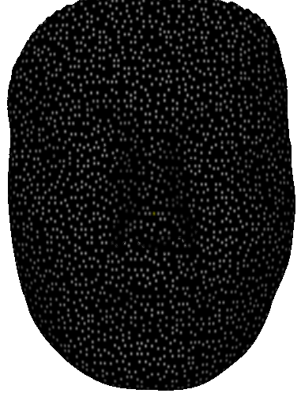
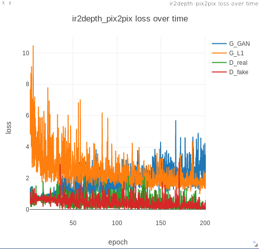
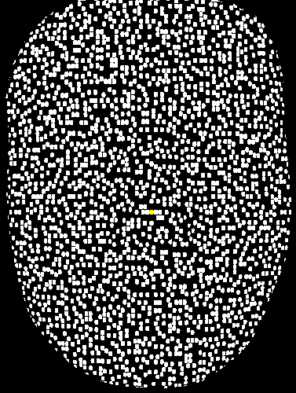
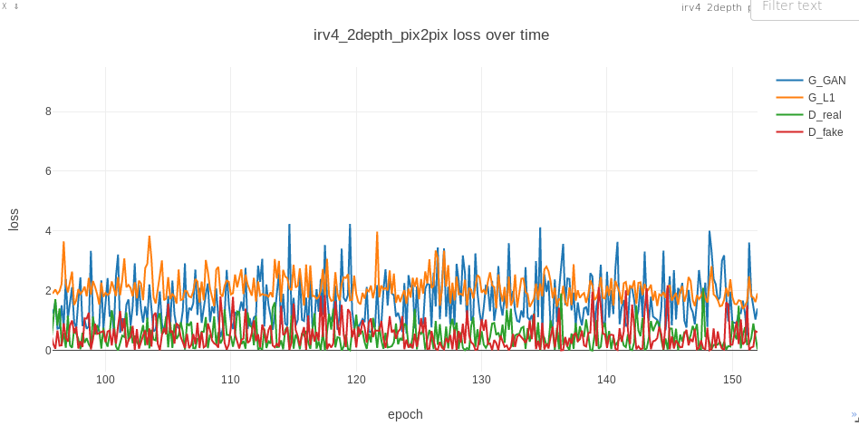
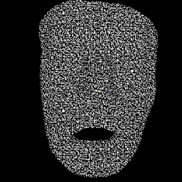
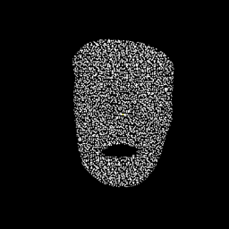
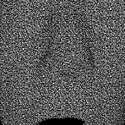

Porject Report - Internship
November
Week 1
Two tracks for the project
-
Retrained on binarized IR images
Non-binarized IR input Training loss
 
Binarized IR input Training loss
 
Trained on binarized IR images with varying distance from camera
  
-
Evaluation metrics RANSAC, Manhatan distance .. some from active stereo nets?
-
ActiveStereoNet: End-to-End Seld-supervised Learning for Active Stereo Systems
- precise depth with subpixel precision of 1/30th of a pixel.
- does not suffer from over-smoothing issues
- preserves edges
- handles occlusions
- robust to noise and texture-less patches
- invariant to illumination changes.
-
IR stereo camera pair is used, pseudorandom pattern projected, captures active illumination and passive light.
-
Avoid matching occluded pixels (causes oversmoothing, edge fattening)
- New reconstruction loss based on LCN (local constrast normalization):
- removes low frequency components from passive IR
- re-calibrates the strength of active pattern locally to account for fading of patterns with distance.
- Window-based loss aggregation with adaptive weights for each pixel
- increase discriminability and reduce the effect of local minima in the stereo cost function.
-
Detect and omit occluded pixels in the images during loss computations.
-
Self-supervised vs supervised passive stereo: Read how self-supervised passive work.
-
Build-in stereo algorithms in cameras (Intel D400) uses a handcrafted binary descriptor (CENSUS) in combination with a semi-global matching scheme. - suffers from common stereo matching issues (edge fattening, quadratic error, occlusions, holes)
-
Received two datasets
-
LS-Net?
- Fab-net and face metrics from IJB